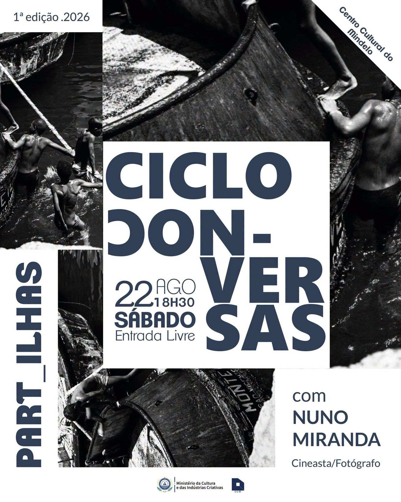

Centro Cultural do Mindelo
PART_ILHAS — ciclo de conversas com Nuno Miranda
- Date
- Saturday, 22 August 2026 · 18:30
- Where
- Centro Cultural do Mindelo
- Admission
- Entrada livre (free)
Details
PART_ILHAS is a ciclo de conversas (conversation series) featuring filmmaker and photographer Nuno Miranda at Centro Cultural do Mindelo. This is the 1st edition (2026); the official flyer carries the Ministério da Cultura e das Indústrias Criativas and Centro Cultural do Mindelo (CCM) marks.
Good to know
Admission is free per the official flyer. Confirm any other current access or registration requirements directly with Centro Cultural do Mindelo or the event listing before attending.
Checked 22 August 2026 against the official event flyer and the Agenda Cultural de Cabo Verde event listing.
See event listing